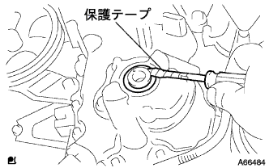

オイルポンプシール 取り外し |
| 1. フロントタイヤRH取りはずし |
| 2. エンジンアンダ カバー RH取りはずし |
ボルト2本およびスクリュ2本をはずす。
ナットをはずし、エンジンアンダーカバーRHを取りはずす。
| 3. ファン ＆ オルタネータ Vベルト取りはずし |
 |
調整用ボルトAおよび固定用ボルトBを緩める。
Vベルトの張力を緩めてVベルトを取りはずす。
| 4. ベーンポンプVベルト(パワステベルト)取りはずし |
 |
固定用ボルトAおよび調整用ボルトBをゆるめる。
Vベルトの張力をゆるめてVベルトを取りはずす。
| 5. エンジンマウンティング インシュレータSUB-ASSY RH取りはずし |
 |
木片などを介して、ジャッキでエンジンを支える。
 |
ボルト５本およびナットをはずし、エンジンマウンテイングインシユレータRHを取りはずす。
| 6. クランクシャフト ダンパSUB-ASSY取りはずし |
 |
ジャッキを操作し、エンジンフロント側を下げてSSTがセットできる位置にする。
SSTを使用してクランクシヤフトダンパを固定し、ボルトを取りはずす。
クランクシヤフトダンパを取りはずす。
| 7. オイルポンプシール取りはずし |
|  |
カッターナイフを使用して、オイルシールのリップ部を切り取る。
保護テープを巻いたマイナスドライバーを使用して、オイルシールをこじて取りはずす。